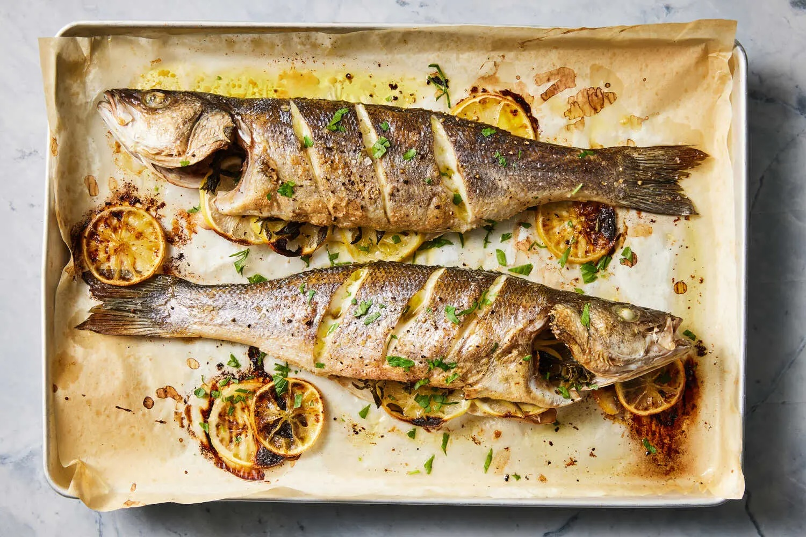

Total time: 40 minutes (5 min prep, 35 min cook).
To remove the bones: start by removing the head and tail with a sharp knife or kitchen shears. Make two long cuts along the top of the fish (one on each side), then slide a flexible spatula underneath the first fillet, separating it from the body and lifting it away from the spine. Transfer to a plate, remove any visible pin bones, then drizzle with olive oil just before serving.
If you want to fillet the fish after cooking, don't make the diagonal cuts before roasting — otherwise it won't separate from the bones as a whole fillet.
Parchment paper and broilers are not friends (oil-coated parchment is flammable). Better to broil on parchment in an oven-safe pan you don't need to lift out.
Add olives after cooking — broiling them leaves them shriveled and colorless.
You can also add quartered tomatoes and a splash of wine to the pan.
Serve with steamed rice and a roasted green vegetable (broccoli or asparagus), squeezing the roasted lemons over everything.
- 10 min on one side, 10 min on the other, 1–2 min broiling
- Used dried herbs (oregano + thyme + rosemary)